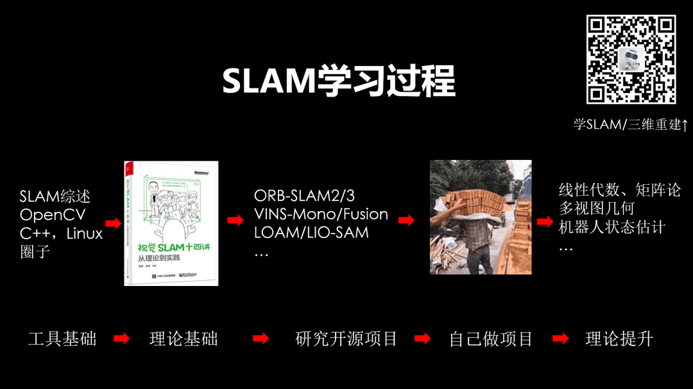
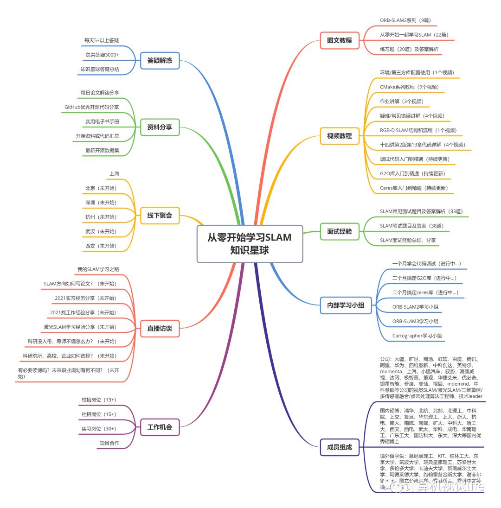

点击上方“计算机视觉life”，选择“星标”
快速获得最新干货
前天直播，我给大家推荐了SLAM学习过程，如下图所示。第一点提到如果你身边没有SLAM学习伙伴，一定要加入学习圈子，不管是 「计算机视觉life」的课程学习交流群、知识星球，还是普通交流群，都能让你快速进步，少走弯路。很多同学（尤其是单打独斗的同学）表示深有感触，相见恨晚！

扫描二维码看直播回放

相信很多学习SLAM的小伙伴通常会经历以下阶段：
看SLAM相关的论文，发现很多公式、理论看不懂，好不容易努力看了个大概，也不知道具体怎么用。
于是去跑开源代码，安装调试出错，网上也找不到解决方案。不知道是环境配置问题还是代码有bug。
好不容易跑通了代码。在实际测试时发现问题很多，远不如论文里写的那么牛逼，不知道这个算法的适用场景是什么。抓不住重点瞎折腾，浪费了时间。
没办法，硬着头皮去看代码，代码量又非常大，看起来非常痛苦，急需大牛帮忙梳理思路。
摸索了很久，终于发现有几个点（藏的很深）好像比较影响算法性能，还发现了一些trick的东西。自己也不会改进，感觉被骗了，纠结要不要换个开源试试。
反反复复好不容易找到适合自己的开源方案，发现上面过程要再来一遍，想要理清代码，搞懂原理也要花费大量精力，更别提改进代码了。
哭晕在SLAM的汪洋大海里。。。
学习SLAM中经历上述阶段是令人痛苦的，关键是浪费了很多宝贵的时间，即使是SLAM大神，我估计或多或少都经历过上述阶段。如果一开始有人能指点一下，肯定能绕开不少坑吧！
「从零开始学习SLAM」知识星球是全国最大的SLAM/三维视觉学习社区，星球里包括小白入门图文/视频教程、学习过程疑难点解答、每日最新论文/开源代码/数据集分享、在线学习小组、笔试面试题、实习/校招/社招岗位推荐、星主直播交流等从入门到精通，从学生到职场的所有内容。见下图。很多小伙伴加入我们的知识星球后，感慨：“终于找到组织了！”
SLAM知识星球内容有哪些？

有效期3天，扫码加入，不满意3天内无条件退款！
最近SLAM星球内部组织了学习小组，星球陆续推出以下独家系列视频教程：
《一个月搞定代码调试：从小白到老手》
《两个月搞懂G2O库：从入门到精通》
《两个月学会Ceres库：从入门到精通》
目前OpenCV，PCL库 学习小组已经开始，后续还会更多的源码解析，重点突破等学习计划~
下面是部分已开放视频（可直接在星球内学习）
以上视频内容每个都会有几十个视频陆续在「从零开始学习SLAM」放出，从入门到进阶，从小白到老手！最近还整理了星球里的部分优质内容（见后），星球成员直接复制链接到浏览器即可查看。
如果不在星球里，可以领一张星球立减优惠券，加入全国最优质的SLAM学习社区，一起交流学习，完成从小白到老手，从学生到职场的蜕变！不管是刚刚入门的新手，还是已经是行业的从业者，都能收获满满！早期加入的成员很多已经进入业界知名公司、高校研究机构开启了精彩的人生。希望SLAM知识星球能够帮助更多的小伙伴快速找到组织，能够高效的进入学习状态，少走弯路，共同进步！
有效期3天，扫码加入，不满意3天内无条件退款！
以下是最近一段时间星球里的部分优质内容整理，星球成员直接复制链接到浏览器即可查看。
/ 向下滑动查看 /
T265 D435 相机标定
在星球里我还经常收到很多小伙伴的提问，比如：机械专业转行学SLAM难吗？C++不会能学SLAM吗？SLAM十四讲需要学到什么程度？学完十四讲后下一步
怎么办？小白入门SLAM需要多久？传统SLAM好发论文吗？导师不带一个人学怎么办？这个报错啥意思，怎么解决？有没有关于XXX的开源代码？......
说实话，这些迷茫我都经历过，所以深有体会。这些问题大部分来自「从零开始学习SLAM」知识星球，我在星球里也做了回复。
SLAM知识星球内容树
（点击看高清图）
这里送大家一张星球立减优惠券，加入全国最优质的SLAM学习社区，一起交流学习，完成从小白到老手，从学生到职场的蜕变！不管是刚刚入门的新手，还是已经是行业的从业者，都能收获满满！
早期加入的成员很多已经进入业界知名公司、高校研究机构开启了精彩的人生。希望SLAM知识星球能够帮助更多的小伙伴快速找到组织，能够高效的进入学习状态，少走弯路，共同进步！
有效期3天，扫码加入，不满意3天内无条件退款！
我们的SLAM知识星球学习交流社区，包含：
图文教程：从零开始学习SLAM图文教程、练习题及答案解析
视频教程：环境/第三方库配置使用、作业讲解、疑难/常见错误讲解、VO代码讲解、RGB-D SLAM教程、CMake系列教程、代码调试系列教程、G2O库系列教程、Ceres库系列教程
面试经验：SLAM常见面试题目及答案解析、SLAM笔试题目及答案、面试经验分享
参考资料：电子书、实用手册、每天SLAM最新论文、开源代码、开源数据集
工作机会：第一时间发布三维视觉、SLAM相关内推实习/校招/社招岗位、项目合作、硕博招生等
答疑解惑：包括作业解答、知识盲点梳理、科研问题答疑、调研调试方法、硕博方向选择等
交流机会：线上直播、线下聚会交流
优秀同学：星球内嘉宾和学员都非常优秀上进，早期加入的成员很多已经进入业界知名公司、高校研究机构开启了精彩的人生。主要来自：
公司：大疆、旷世、商汤、虹软、百度、腾讯、阿里、华为、四维图新、中科创达、英特尔、momenta、上汽、小鹏汽车、驭势、海康威视、达闼、极智嘉、肇观、华捷艾米、优必选、银星智能、普渡、高仙、视辰、indemind、中科慧眼等公司的视觉SLAM/激光SLAM/三维重建/多传感器融合/点云处理算法工程师、技术leader
留学生：慕尼黑理工、KIT、柏林工大、东京大学、筑波大学、瑞典皇家理工、苏黎世大学、多伦多大学、卡迪夫大学、新南威尔士大学、阿德莱德大学、约翰霍普金斯大学、谢菲尔德大学、国立台湾大学、香港理工、香港中文等境外留学生
国内硕博：清华、北航、北邮、北理工、中科院、上交、复旦、华东理工、上大、浙大、杭电、南大、南航、南邮、矿大、中科大、哈工大、西交、西电、武大、华科、成电、华南理工、广东工大、国防科大、东大、深大等国内优秀硕博士
不仅如此，计算机视觉life推出了系列精品课程，所有星球成员都能获得内部课程优惠券，详情见星球说明。今后我们将会推出更多机器人SLAM、自动驾驶、AR相关优质课程，星球成员都会第一时间享受内部优惠价。
1、视觉SLAM必备基础课程：视觉SLAM必备！ORB-SLAM2源码解析第2期重磅升级！
2、深度学习三维重建课程：当深度学习爱上三维重建
3、激光定位+建图课程：激光SLAM怎么学？手把手教你Cartographer从入门到精通！
4、视觉+IMU定位课程 VINS-Mono：原理深剖+白板从零手推公式+源码逐行精讲！
5、手把手图像三维重建课程：三维重建教程：稠密匹配、点云融合、网格重建与优化、纹理贴图
星球里部分图文/视频教程见下：
星球里部分内容汇总见下：
什么是SLAM？
SLAM是 Simultaneous Localization And Mapping的 缩写，一般翻译为：同时定位与建图、同时定位与地图构建。
SLAM的典型过程是这样的：当某种移动设备（如机器人/无人机、手机、汽车等）从一个未知环境里的未知地点出发，在运动过程中通过传感器（如激光雷达、摄像头等）观测定位自身在三维空间中的位置和姿态，再根据自身位置进行增量式的三维地图构建，从而达到同时定位和地图构建的目的。

传统的视觉算法主要是对针对二维图像的处理，借助深度学习在分类识别方面取得了超越人眼精度的巨大成就，就像人眼是通过双眼立体视觉来感知三维世界一样，智能移动终端（比如智能手机、无人汽车、无人机、智能机器人）需要能够像人类一样利用SLAM算法来快速精确的感知、理解三维空间。
最近几年，以双目相机、结构光/TOF相机、激光雷达为代表的三维传感器硬件迭代更新迅猛，国内外已经形成了成熟的上下游产业链。三维视觉传感器也逐渐走入普通人的生活，在智能手机、智能眼镜等设备上应用越来越多，以手机为例，苹果、华为、小米、OPPO、VIVO等手机大厂都在积极推动结构光/TOF相机在手机上的普及。
SLAM技术为核心的三维视觉在学术界也是一个热门方向，从最近几年计算机视觉相关的顶级会议CVPR, ICCV, ECCV，IROS, ICRA 录用论文来看，视觉定位、三维点云识别分割、单目深度估计、无人驾驶高精度导航、语义SLAM等相关论文占比越来越高。
因此SLAM技术在最近几年发展迅猛，广泛应用于增强现实感知、自动驾驶高精度定位、机器人自主导航、无人机智能飞行等前沿热门领域。
关于SLAM的入门介绍及应用案例解析，可以看笔者在一次线下分享中，做的一个入门视频介绍，时长约55分钟
学习SLAM如何入门？
SLAM是涵盖图像处理、多视角视觉几何、机器人学等综合性非常强的交叉学科。
学习SLAM涉及线性代数矩阵运算、李群李代数求导、三维空间刚体变换、相机成像模型、特征提取匹配、多视角几何、非线性优化、回环检测、集束调整、三维重建等专业知识。SLAM是强实践学科，需要具有一定的C++编程能力，掌握Linux操作系统、Eigen, Sophus, OpenCV, Dbow, g2o, ceres等第三方库，能够快速定位问题，解决bug。
SLAM关联知识（点开查看大图）
这对于初学者来说无疑具有较高的门槛，也需要花费不少的时间来摸索重点，打好基础。这个过程可能比较痛苦，但是熬过了这个过程，你就拥有了自己独有的核心竞争力，不用担心轻易被取代，未来会有非常强的竞争力。
但是目前关于SLAM学习的资料不多，而且参差不齐，初学者推荐高翔的《视觉SLAM十四讲》，该书也是本教程的必备参考书籍
计算机视觉life总结了SLAM学习资源树（点击看大图）
但很多小伙伴在学习期间仍然会遇到很多困难：公式看不懂，代码不会写，不知道怎么入手，没有人指导或者一起讨论，很容易不得要领，进度极慢，走弯路等，不仅浪费了时间和精力，甚至因此放弃了该方向的研究，以后可能再也没有机会进入这个领域了，错过了时代的风口。
目前SLAM领域优秀企业列表（点开查看大图）
有没有好的教程和学习圈子，可以避免采坑，及时答疑解惑，少走弯路，快速入门？
《从零开始学习SLAM》知识星球
有效期3天，扫码加入，不满意3天内无条件退款！
1、技术介绍全面。学习过程从基础的知识开始循序渐进，内容涵盖图文教程、视频教程、技术交流分享、工作机会。
2、专门设计的练习题，重视实践。星主根据不同知识点设计一些实用性的练习题（推导、编程等），所有提交作业都会批改。光看不做假把式，适当的练习能够加深读者的理解，把知识消化吸收为自己所用。
3、高质量的交流学习社区。星球成员来自国内外硕博士及相关公司研发人员。练习题，有专属内部实名微信群 帮助日常互助答疑解惑。所有成员都可以进行发布问题、分享知识、上传资源、点赞、留言、赞赏、收藏等操作。星球里提问均免费，星主会及时答疑解惑 。
4、精选SLAM常见面试题，定期发布在星球里，引导大家讨论，并提供参考答案，帮助找工作的同学从容面试。目前已经有几十条SLAM常见面试题目和详细解答。
见《干货总结 | SLAM 面试常见问题及参考解答》。星球内也会经常发布SLAM相关的实习生/校园/社会招聘。
如何加入知识星球？
知识星球需付费加入，价格随人数增加逐渐上涨，因此越早加入越优惠。有效期一年（从加入时间开始往后一年有效，到期仍可查看之前所有内容，查看新内容需续费），平时忙也没关系，有空可以反复看。
时间不等人，万事早为先。学习切忌单打独斗，一个良好的学习圈子能够帮助你快速入门，交流讨论才能少走弯路，快速进步！加入SLAM学习星球，把握时代的风口，和国内外优秀的SLAM研究者一起交流进步
有效期3天，扫码加入，不满意3天内无条件退款！
加入之后，邀请其他人加入后双方都可以获得一定比例的返现。快快分享给爱学习的小伙伴吧~
长按关注计算机视觉life

发表评论 取消回复